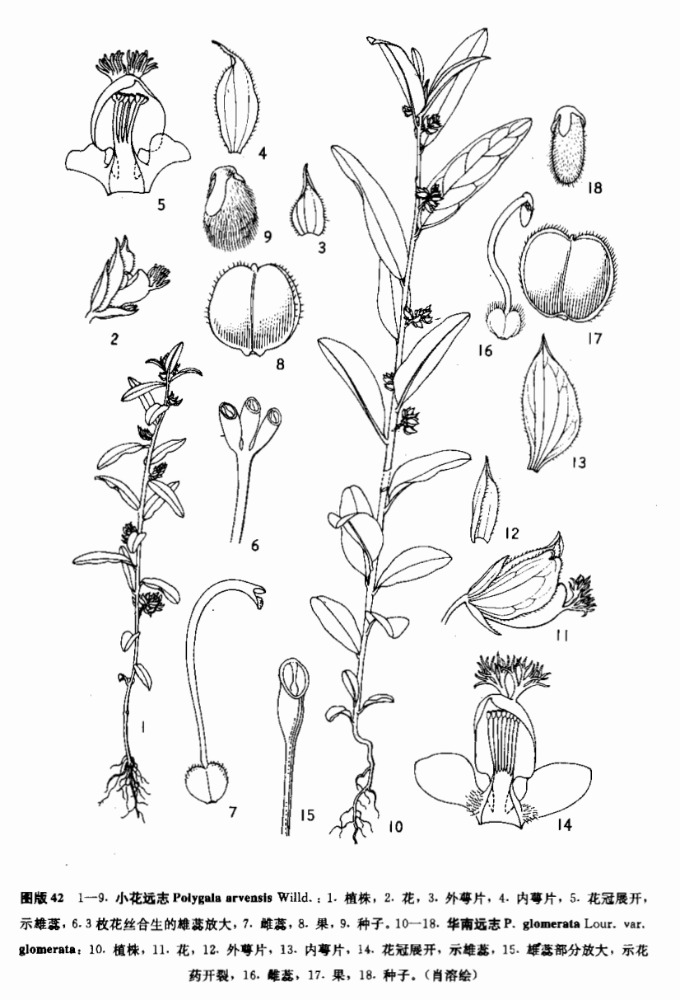

出现篇目
古代记载 《毛诗故训传》
葽，草也。（《毛传》注《生民》）
《毛诗正义》
正义曰：四月秀者，葽之草也。（《毛诗正义》疏《生民》）
《诗集传》
葽、草名。（《诗集传》集注《生民》)
《本草纲目》
《别录》曰∶远志，生太山及冤句川谷。四月采根、叶，阴干。 弘景曰∶冤句，属兖州济阴郡。今此药犹从彭城北兰陵来。用之去心取皮，一斤止得三两尔。亦入仙方用。小草，状似麻黄而青。 志曰∶茎叶似大青而小。比之麻黄，陶不识也。 禹锡曰∶按∶《尔雅》云∶葽绕，棘菀。郭璞注云∶今远志也。似麻黄，赤华，叶锐而黄。其上谓之小草。 颂曰∶今河、陕、洛西州郡亦有之。根形如蒿根，黄色。苗似麻黄而青，又如毕豆。叶亦有似大青而小者。三月开白花。根长及一尺。泗州出者，花红，根叶俱大于他处。商州出者，根乃黑色。俗传夷门出者最佳。四月采根，晒干。古方通用远志、小草。今医但用远志，稀用小草。 时珍曰∶远志有大叶、小叶二种，陶弘景所说者，小叶也；马志所说者，大叶也。大叶者，花红。
当代记载 《中国植物志》
远志（Polygala tenuifolia Willd），多处生草本，高15-50厘米；主根粗壮，韧皮部肉质，浅黄色，长达10余厘米。茎多数丛生，直立或倾斜，具纵棱槽，被短柔毛。花果期5-9月。产东北、华北、西北和华中以及四川；生于草原、山坡草地、灌丛中以及杂木林下，海拔（200-）460-2300米。分布于朝鲜、蒙古和俄罗斯。

<中国植物志>